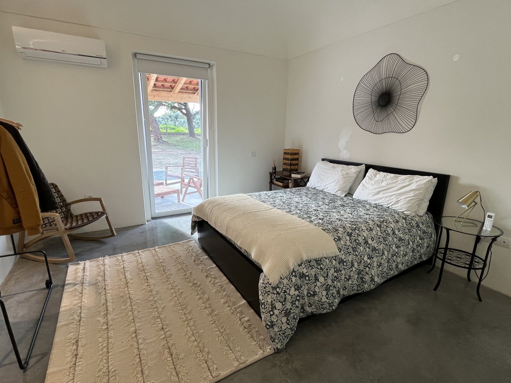
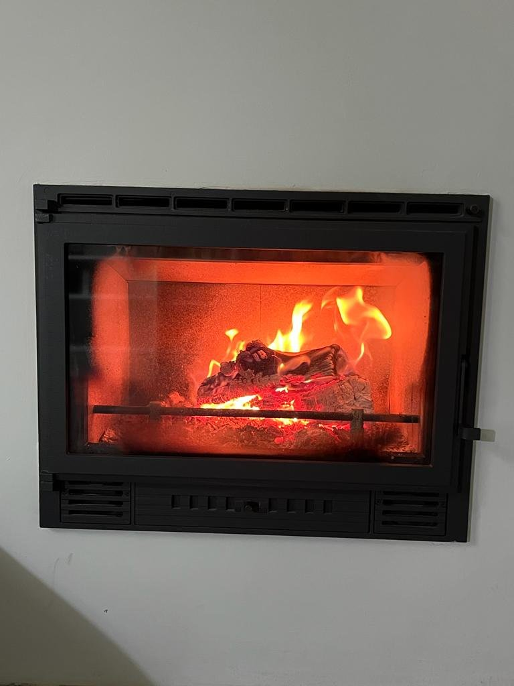
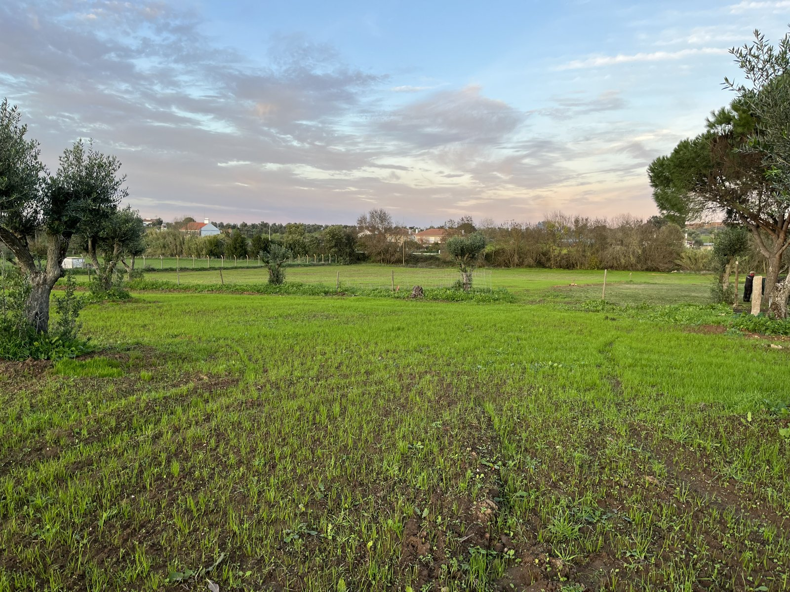

Reguengo · Montemor-o-Novo · Alentejo
Dias
bem
passados.
Uma casa inteira para oito, com o conforto de casa. E o campo todo à volta.
Vamos mostrar-vos os cantos
Uns dias livres.
Uma boa ideia.
Montemor-o-Novo
Exemplo fictício · fonte prevista: Open-Meteo
Entrem.
Há espaço
para todos.
Uma cozinha para usar à vontade. Uma mesa para juntar o grupo. Quatro quartos para dormir bem. E uma biblioteca com lareira para os dias mais frescos.


O tempo é o melhor programa
Domingo,
fica mais
um bocadinho.
Mais um almoço sem olhar para o relógio. Mais uma conversa no alpendre. Uma boa razão para chegar a segunda-feira com outro ar.
A saída tardia é possível quando não há entrada no mesmo dia, sempre combinada com o Diogo. A hora é confirmada para cada estadia.
Pensar no próximo fim de semana
Há casa
o ano inteiro.
A piscina chama no verão. Nos outros meses há campo verde, lareira e o mesmo conforto. Os animais de companhia também são bem-vindos; combinem os pormenores com o Diogo.

Hoje, ficamos por dentro.
A biblioteca com lareira é um bom sítio para não fazer grande coisa.

Juntem as pessoas. Escolham os dias.
Contas claras.
Dias bem passados.
O preço é da casa inteira. Escolham os dias e o grupo. Depois, falem diretamente com o Diogo para combinar os pormenores.
Neste estudo, o valor é indicativo. A disponibilidade e o preço final precisam de confirmação do Diogo.
Montemor-o-Novo · próximos dias
Exemplo visual · valores fictícios
Dados: Open-Meteo
Fonte prevista; estes valores são apenas de apresentação.
Total da casa
2 noites · casa inteira
2 × 250 € + 170 € de limpeza
Exemplo indicativo. O Diogo confirma a disponibilidade e o total para a vossa estadia.
Média dos últimos 10 anos
Exemplo visual · valores fictícios; não é uma previsão
Pôr do sol no dia de saída: 17h20*
*Hora fictícia para mostrar o desenho. A saída tardia depende de não haver entrada no mesmo dia e de combinação com o Diogo.
Dados: Open-Meteo
O formulário de pré-reserva será apresentado na página de reserva. Neste estudo, podem preparar uma mensagem por WhatsApp ou email; nada foi enviado.
Reguengo · Montemor-o-Novo
Perto o suficiente
para vir mais vezes.
A cerca de uma hora de Lisboa e a 25 minutos de Évora. O centro de Montemor-o-Novo fica a três quilómetros. Aqui, o tempo é para aproveitar a casa e a vida do campo.
Ver localização ↗Podemos levar os nossos animais?
Os animais de companhia são bem-vindos. Falem com o Diogo antes da estadia para combinar os pormenores.
Como funciona a chegada?
A entrada é a partir das 16h. Recebem as indicações e o acesso à chave por WhatsApp, sem uma entrega presencial combinada.
Podemos sair mais tarde no domingo?
Quando não há entrada no mesmo dia, é possível combinar uma saída tardia com o Diogo. A hora é confirmada para cada estadia.